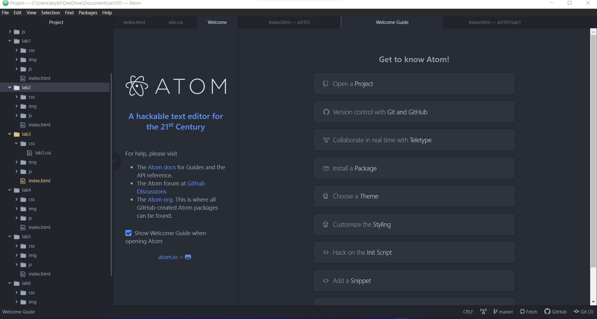

Lab 3 File Structures
The idea of this lab was to further create a
local file structure on my computer and add index.html files.
Challenges
There were not any significant challenges for me.
I knew how to do majority of the things and everything else
I was able to find out how to do on W3Schools.
Results
Here is the file structure that we made
